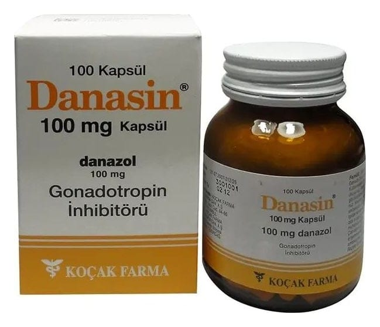

Danasin 100 mg Kapsül, 100 Adet

Ne için kullanılır
KT · Bölüm 1DANASİN, etkin madde olarak danazol içerir. DANASİN, vücudunuzdaki bazı hormonların etkisini değiştirir. DANASİN 100 kapsüllük renkli, cam şişelerdeki ambalajlarda sunulur.
DANASİN, aşağıdaki hastalıkların tedavisinde kullanılır: Endometriyozis: Rahim içerisinde yer alan endometriyumun hücre tabakasının rahim dışında başka bir alanda yer alması. Fibrokistik hastalık: Kötü huylu olmayan, ağrılı olabilen meme kistleri. Organik nedenli olmayan Menoraji: Menstruel kanamanın uzaması. Premenstruel Sendrom: Adet öncesi dönemde adetten yaklaşık 1 hafta önce başlayan ruhsal ya da fiziksel bir takım sıkıntılar ve gerginlikler. Histeroskopik Endometriyal Ablasyon öncesi endometrium'un inceltilmesi: Endoskop denen özel cerrahi görüntüleme ile rahmin içerisini kaplayan endometrium tabakasının alınmasından önce tabakanın inceltilmesi. Primer jinekomasti: Erkeklerde kadınsı meme büyümesi. Puberte prekoks: Ergenliğin erken yaşta başlaması. Herediter Anjioödem: Genellikle ağrının eşlik etmediği, tekrarlayıcı ve geçici şişlik ataklarıyla seyreden, nadir bir genetik hastalıktır.